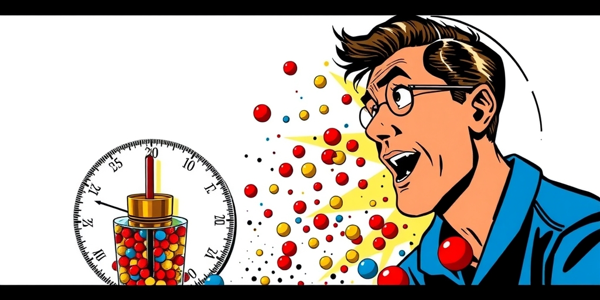
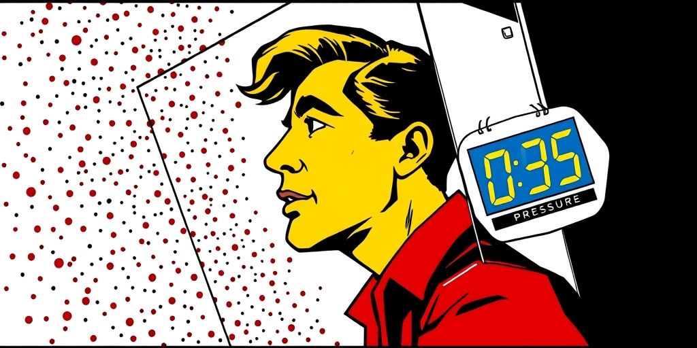
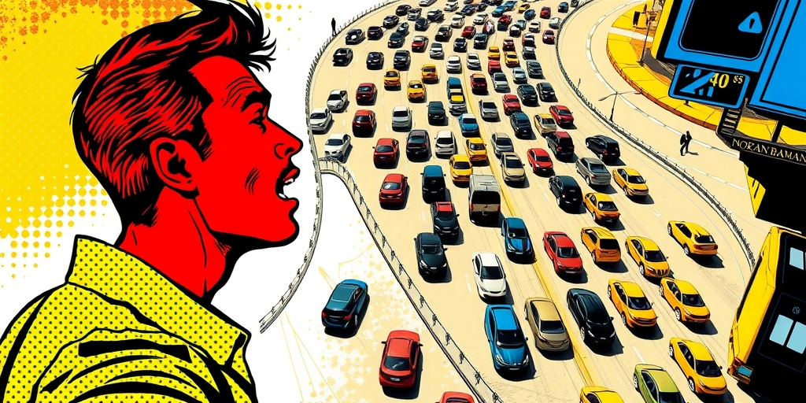

小汪老师的成长洞察 · 属于你的成长专栏
1738年，丹尼尔·伯努利提出一个疯子般的假说：气压不是来自分子之间的静止排斥，而是无数看不见的微粒在疯狂撞击容器壁。这个假说被嘲笑了近两百年。但今天，它成了我们理解社会最深刻的物理隐喻——微观上完全混乱的个体行为，在宏观上涌现出精确、稳定、可测量的秩序。

1938年，伯努利在《流体力学》里写下那个假说时，没有人当回事。气体由向各方向随机运动的微粒组成？气压来自分子对器壁的碰撞？这太荒唐了。牛顿的猜想是分子之间有静态排斥力，这个解释更体面。看不见的小东西在产生看得见的效果——这个想法本身就让18世纪的物理学家不舒服。
1859年，麦克斯韦出手了。他推导出分子速度的分布律——这是物理学史上第一个统计定律。你不需要知道每个分子在哪、跑多快、往哪去。你只需要知道它们的速度分布遵循一个稳定的数学规律。1871年，玻尔兹曼把这套理论推广成统计力学的大厦。1905年，爱因斯坦通过布朗运动的数学分析，给出了分子存在的决定性证据。
167年的长征，一个被嘲笑的假说变成了现代物理学的基石。而它的核心洞见只有一句话：你可以不知道每一个分子的一切，但你仍然可以精确计算它们集体产生的结果。公式写出来很简单：P=(1/3)·(N/V)·m·v²_rms。压强是一个统计量，它不属于任何一个分子。

菲利普·鲍尔在《预知社会》里把这个洞见从物理搬进了社会。一个城市几百万人，每天早上各自决定几点出门、走哪条路、开多快。这些决策彼此独立，高度随机。你无法预测张三今天会不会早出门五分钟。
但把整个城市的车流量放在一起看，早高峰的拥堵模式年复一年地稳定——同样的时段、同样的瓶颈路段、同样的持续时间。这不是因为几百万人商量好了。是因为统计的力量。每个人都在做自己的决定，但集合起来就涌现出了规律。
股市是另一个例子。每个交易员的每一笔买卖都有个人原因，无法被完美预测。但几百万笔交易汇总起来，价格走势呈现出统计规律——波动率聚类、肥尾分布、均值回归。不是因为有一只“看不见的手”在指挥，是因为大量独立个体的随机行为在统计上产生了涌现的秩序。犯罪的年发生率、选举的投票模式、语言的演化方向——所有这些看起来“有规律可循”的社会现象，在个体层面都对应着完全不可预测的个人决策。

这是最反直觉的一点。我们天然假设“有秩序”意味着“有纪律”——军队整齐是因为每个人服从命令，流水线高效是因为每个人执行标准动作。但气体分子运动论告诉我们一个完全不同的故事。
宏观秩序可以在微观完全混乱的基础上涌现。压强不需要分子们商量好一起撞，温度不需要分子们协调动作。每个分子都在做自己的事，以完全自私、完全随机的方式运动，统计力学就成立了。社会同构：自由市场的价格信号不需要任何消费者服从任何计划。每个人自私地做出购买决策，汇总起来就产生了一个精确反映供需关系的价格。
哈耶克把这叫“自发秩序”。气体分子运动论已经为这个概念背书了两百多年。更深一层想：同样的水分子，在99°C以下是液体，100°C以上是气体。微观上没有质变——分子还是那些分子，还是那样乱跑。但宏观上发生了质变——整个系统从一个状态跳到了另一个。这个跳跃不能被任何单个分子的行为解释，它只存在于集体层面。这就是社会的相变。
气体用一个温度读数告诉你“分子的平均动能”。但一个气体里，有些分子的速度是平均值的十分之一，有些是平均值的十倍。平均值掩盖了微观的极端分布。GDP告诉你人均收入，但不告诉你收入的分布。犯罪率告诉你每十万人的案发数，但不告诉你犯罪集中在哪几个街区。
失业率是一个数字，但一百万个失业者是一百万个不同的故事。我们用一个数字总结一个分布式现象，然后逐渐忘记这个数字只是统计构造，不是任何个体的真实体验。温度是真实存在的物理量，但它不属于任何一个分子。同样，GDP是真实存在的经济量，但它不属于任何一个公民——它属于“集体”这个抽象实体。
气体分子运动论提醒我们：当你在看“平均数社会”时，你看到的不是社会本身，是统计力学的屏幕保护程序。这个洞见对理解因果同样有用。为什么气压是1个大气压？微观层面：因为10^23个分子在碰撞器壁。宏观层面：因为理想气体定律PV=nRT。两个答案在各自层面上都是完整的，不能互相还原——你不能指着任何一个分子说“是这个分子造成了压强”。
这个类比最深的启示在治理。监测式治理试图追踪个体行为——监控每个人在做什么，预测每个人的下一步，纠正每个人的偏差。这在气体分子的世界里相当于“想追踪每个分子并计算它的轨迹”。数学上不可能，成本上更不可能。
约束式治理试图设计系统结构——让集体层面的秩序在个体保持自由的情况下自发涌现。就像设计容器的形状，你不需要告诉每个分子怎么运动，你只需要设计一个容器，压强自然就出来了。政策的艺术不是控制个体，是设计“容器的形状”——制度的框架、激励的结构、信息的流动——然后让个体在里面自由碰撞，等待宏观秩序涌现。
我们永远无法预测下一个发明iPhone的人是谁、下一次金融危机由哪一笔交易触发、下一场革命由哪一次抗议点燃。这些事件在个体层面不可预测。但我们可以预测技术扩散的S曲线、金融系统的周期性危机、社会不公积累到临界点时的相变风险。好的社会科学不是算命，是在集体层面识别涌现的模式和临界条件。
写给你的话
如果你接受这个类比，那就得面对一个不舒服的问题：改变社会这件事，到底应该从哪个层面着手？改变一千个人的行为？还是改变这些人所处的“容器的形状”？气体分子运动论的答案是第二个。但第二个难度大得多——它要求你理解社会的“器壁”是什么。是法律、是税收、是教育体系、是信息流动的方式？这些器壁无形无相，在你意识到它们存在之前，它们已经决定了你所有“自由选择”的统计结果。如果你想让气压下降，你不会去说服每一个分子冷静一点。你会改变容器的体积或温度。如果你想让社会更公平，你会做什么？去改变每一个人的心？还是去改变他们所处环境的参数？
参考资料
• The Economic Times: Psychology suggests reason so many older parents won't ask for help is a fear they'd never say aloud (Jun 2026)
• The Economic Times: Psychology says adults who learned to depend on no one as children don't grow into self-sufficient adults (Jun 2026)
• The Economic Times: Psychology says people who always take the last piece of cake are not necessarily selfish (Jun 2026)
小汪老师的成长洞察 · 属于你的成长专栏